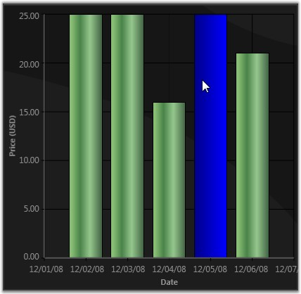

Chart for WPF lets you implement list box-like selection of data point segments in your chart. The following steps illustrate this.
1. Bind the Chart to a CollectionViewSource
Wrap your data in a CollectionViewSource and bind this to a Chart Series.
|
[XAML]
<!--Create a CollectionViewSource.--> <local:MyDataCollection x:Key="SeriesData1"/>
<CollectionViewSource x:Key="cvs" Source="{StaticResource SeriesData1}" />
<!--Bind this to a Chart Series.--> <sfchart:ChartSeries DataSource="{Binding Source={StaticResource cvs}}" Template="{StaticResource SeriesTemplate}" Type="Column" BindingPathX="Date" BindingPathsY="Y2" /> |
The CollectionViewSource has a CurrentItem property which tracks the "selected item". The Chart control listens to this property change and updates the corresponding data point's ChartSegment.IsSelected property appropriately.
2. Create a Custom Template
Create a custom template that renders a data-point segment with a "selected" look and feel, when the ChartSegment.IsSelected property changes to true.
|
[XAML]
<!-- This template helps in 2 ways. 1) It enables to bind to IsSelected property to change the selected segment color. 2) It enables to listen to Canvas.MouseDown event to change selection.--> <DataTemplate x:Key="SeriesTemplate"> <!--Change the CollectionView.CurrentItem in the handler.--> <Canvas MouseDown="Canvas_MouseDown"> <Grid Canvas.Left="{Binding X}" Canvas.Top="{Binding Y}" Width="{Binding Width}" Height="{Binding Height}"> <Border Name="ColumnRect" VerticalAlignment="Bottom" Width="{Binding Width}" Height="{Binding Height}"> <Border.Style> <Style TargetType="{x:Type Border}"> <Setter Property="BorderThickness" Value="1"/> <Setter Property="BorderBrush" Value="Black"/> <Setter Property="Background" Value="{Binding Interior}"/> <Style.Triggers> <DataTrigger Value="True"> <DataTrigger.Binding> <!-- By binding to IsSelected you can change the background of "CollectionView.CurrentItem".--> <Binding Path="IsSelected"/> </DataTrigger.Binding> <Setter Property="Background" Value="{StaticResource MouseHoverInterior}"/> </DataTrigger> </Style.Triggers> </Style> </Border.Style> </Border> </Grid> </Canvas> </DataTemplate>
<!--Defines the interior that will be used as the "highlight" color.--> <LinearGradientBrush x:Key="MouseHoverInterior" StartPoint="0,0.5" EndPoint="1,0.5"> <GradientStop Color="#FFFDAE41" Offset="0"/> <GradientStop Color="#FFFDC55C" Offset="0.860442"/> <GradientStop Color="#FFFDDD77" Offset="0.989014"/> <GradientStop Color="#FFFDDD77" Offset="1"/> </LinearGradientBrush> |
This will cause the CollectionView.CurrentItem to be rendered distinctly. Note that the CurrentItem can be changed by a different Control bound to the same CollectionView, and this change will be automatically reflected in the Chart.
3. Change CollectionView.CurrentItem
Change it when any Mouse Button is pressed while the Mouse Pointer is moved over a Data Point Segment.
To change the CurrentItem when any mouse button is pressed while the mouse pointer is moved over a data point segment, listen to the MouseDown event of the top-level Canvas in the template, as illustrated in the following code.
|
[C#]
private void Canvas_MouseDown(object sender, MouseButtonEventArgs e) { // Get the corresponding Chart Segment. ChartSegment seg = ((ChartSeriesPresenter.ChartSegmentPresenter)(((Canvas)sender).TemplatedParent)).Segment;
// Get the corresponding bound CollectionView. CollectionView cv = seg.Series.DataSource as CollectionView;
// Set the CurrentItem in the CollectionView. cv.MoveCurrentToPosition(seg.CorrespondingPoints[0].Index); } |

Figure 105: Selecting Data Points as in a List Box
A sample which demonstrates Data Point highlighting feature is available in the following sample installation path.
..My Documents\Syncfusion\EssentialStudio\<Version Number>\WPF\Chart.WPF\Samples\3.5\WindowsSamples\Chart Series\Selectable Data Points Demo
See Also
Highlighting Series, Highlighting Data Points, Populating Chart Series